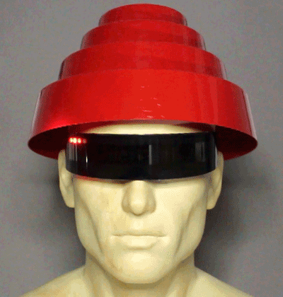

Today we are going to build a pair of sunglasses that are attached to LED's. This is a very small part of a e-texile world. The process of combining electronics and fashion has grown to be a large industry. The area of wearables has exploded over the past several years as you most likely own several wearables. They process of adding electronics to fashion and everyday items stretchs from clothing to accessories.
Your task to complete a pair of sunglasses by adding LED's to the glasses.